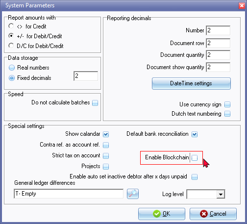
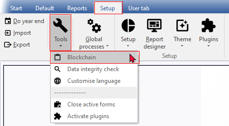
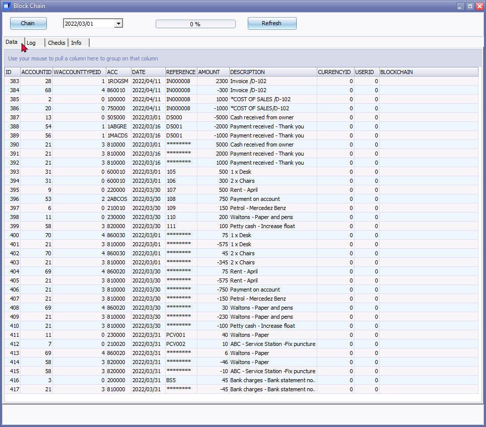
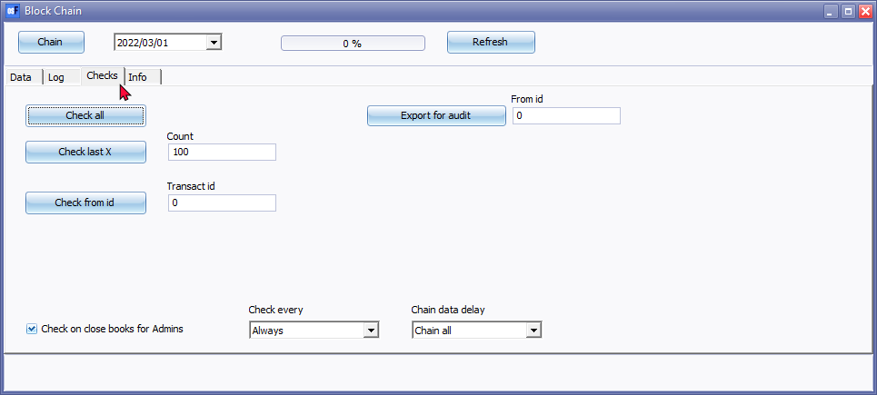
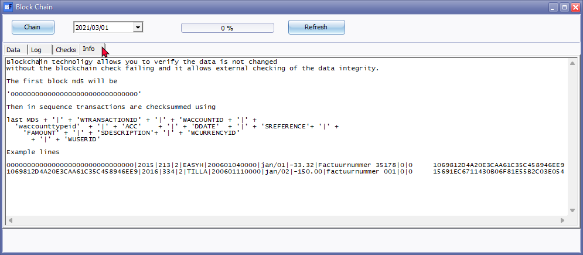

Blockchain
What is blockchain?
Blockchain is a decentralized digital ledger technology that allows for secure and transparent record-keeping of data across a network of computers. It was originally developed for the cryptocurrency Bitcoin, but has since been adapted for use in many other applications.
In a blockchain network, transactions are recorded in blocks and each block is linked to the previous block in a chain, forming a chronological and immutable record of all transactions that have taken place. This makes it very difficult for any one party to modify or tamper with the data, ensuring that the system is secure and reliable.
Blockchains are typically maintained by a network of nodes, which can be run by anyone with the appropriate hardware and software. Transactions are validated and added to the blockchain by nodes using complex algorithms, and nodes are incentivized to maintain the system through rewards such as cryptocurrency.
Blockchains have a wide range of potential applications beyond cryptocurrency, including in supply chain management, voting systems, identity verification, and more. They offer a way to securely and transparently store and transmit data without the need for intermediaries, and could have a significant impact on many industries in the coming years.

Activate Blockchain in osFinancials
Blockchain - By default, Blockchain is not activated. Blockchain needs to be activated in the Setup → System parameters on the Setup ribbon.
On the Setup ribbon, go to Setup → System parameters.

Select (tick) "Enable Blockchain".
Click OK.
Reopen the Set of Books to activate Blockchain.
Access Blockchain
Once Blockchain is activated, you may access Blockchain from the Tools → Blockchain menu on the Setup ribbon.

|
|
Setting options to launch Blockchain: Close Set of Books or Exit osFinancials5 will automatically launch if the "Check on close books for Admins" setting is selected (ticked). Check every
Chain data delay
|

Blockchain - Data tab
The Data tab will list all posted transactions in batches (journals) and sales documents (i.e. invoices and credit notes) as well as purchase documents (i.e. purchases and supplier returns) in the Transactions table.

The details of each transaction will be listed in eleven (11) columns and is as follows:
- ID - Transaction ID generated for each transaction.
- WACCOUNTID - Account ID of each account
- WACCOUNTTYPEID - The Account type Id is as follows:
- ACC - Account code -
- DATE - Date of the transaction
- REFERENCE - The Reference of the transaction as entered in the "Reference" column of "Batch entry" screens. Balancing entries (generated when batches is balanced) is displayed with eight (8) asterisks (i.e. ********). In the case of sales documents (i.e. invoices and credit notes) as well as purchase documents (i.e. purchases and supplier returns) as generated when processing documents.
- AMOUNT - Amount of the transaction.
- DESCRIPTION - Description as entered in the "Description" column of "Batch entry" screens. In the case of sales documents (i.e. invoices and credit notes) as well as purchase documents (i.e. purchases and supplier returns), the Document number as well as the reference entered in the "Your reference" field in the document header.
- CURRENCYID -
- USERID -
- BLOCKCHAIN -
Blockchain - Log tab
Blockchain - Checks tab

Check every
- Always
- Every day
- Every week
- Every month
- Every 3 months
- Every 6 months
- Every 1 year
Chain data delay
- Chain all
- Chain 1 day ago
- Chain 1 week
- Chain 1 month
- Chain 3 months
- Chain 6 months
- Chain 1 year
Blockchain - Info tab
Blockchain technology allows you to verify the data is not changed
without the blockchain check failing and it allows external checking of the data integrity.

The first block md5 will be
'0000000000000000000000000000000'
Then in sequence transactions are checksummed using
last MD5 + '|' + 'WTRANSACTIONID' + '|' + 'WACCOUNTID + '|' +
'waccounttypeid' + '|' + 'ACC' + '|' + 'DDATE' + '|' + 'SREFERENCE'+ '|' +
'FAMOUNT' + '|' + 'SDESCRIPTION'+ '|' + 'WCURRENCYID'
+ '|' + 'WUSERID'
Example lines
0000000000000000000000000000000|2015|213|2|EASYH|200601040000|jan/01|-33.32|Factuurnummer 35178|0|0 1069812D4A20E3CAA61C35C458946EE9
1069812D4A20E3CAA61C35C458946EE9|2016|334|2|TILLA|200601110000|jan/02|-150.00|factuurnummer 001|0|0 15691EC6711430B06F81E55B2C03E054
The MD5 hash function was originally designed for use as a secure cryptographic hash algorithm for authenticating digital signatures. But MD5 has been deprecated for uses other than as a noncryptographic checksum to verify data integrity and detect unintentional data corruption.
The MD5 hash function was originally designed for use as a secure cryptographic hash algorithm for authenticating digital signatures. But MD5 has been deprecated for uses other than as a noncryptographic checksum to verify data integrity and detect unintentional data corruption.
Blockchain - Export for audit
Blockchain data can be exported for audit purposes.
One example of this is the use of blockchain explorers, which are web-based tools that allow users to view the data stored on a blockchain in a user-friendly format. These explorers can be used to export transaction data and other information from the blockchain, which can then be analysed and audited by third parties.
For example, a company using a blockchain-based supply chain management system might use a blockchain explorer to export data on all of the transactions that have taken place on the network. This data could then be analysed by auditors to ensure that all of the transactions are accurate and that there are no discrepancies or irregularities.
Another approach to exporting blockchain data for audit purposes is to use specialized audit tools and software that are designed to work with specific blockchain networks. These tools can provide detailed analytics and reporting on blockchain activity, making it easier for auditors to identify potential issues or areas of concern.
Overall, exporting blockchain data for audit purposes requires specialised tools and expertise, but it can be an effective way to ensure the security and reliability of blockchain-based systems.